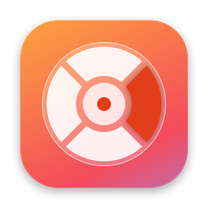

RuedaConvert
Arrastra un archivo, pulsa ⇧ Shift y suéltalo en el formato que quieras. Así de simple.
Descargar para MacInstalar
- Pulsa Descargar para Mac y abre el archivo
RuedaConvert-macOS.zip. - Arrastra RuedaConvert a tu carpeta Aplicaciones.
- Ábrela. Si macOS dice que no puede comprobar la app, ve a Ajustes del Sistema → Privacidad y seguridad, baja hasta Seguridad y pulsa Abrir igualmente. Solo se hace una vez.
- Aparecerá una ventana de bienvenida y el icono de RuedaConvert en la barra de menú, arriba a la derecha.
¿Por qué sale ese aviso? Apple lo muestra con las apps gratuitas que no se descargan desde la App Store. El código de RuedaConvert es público y puedes revisarlo en GitHub.
Cómo se usa
- Empieza a arrastrar un archivo desde Finder o el Escritorio.
- Sin soltarlo, pulsa ⇧ Shift: aparece la rueda bajo el cursor.
- Suelta el archivo sobre el formato que quieras. El centro cancela.
Lo convertido se guarda en Descargas. Si prefieres que se guarde junto al original, abre el icono de la barra de menú → Ajustes… → Dar permiso a una carpeta.
Qué convierte
| Arrastras | Obtienes |
|---|---|
| Word (DOCX), JPG, PNG, texto | |
| Fotos: HEIC, JPG, PNG, WEBP, GIF, TIFF | JPG, PNG, HEIC, PDF, texto (lee el texto de la foto) |
| Documentos: Word, RTF, ODT, HTML, TXT | PDF, Word, TXT, RTF, HTML |
Todo se convierte en tu Mac. Tus archivos nunca se suben a internet.
Preguntas frecuentes
No aparece la rueda. Comprueba que el icono de RuedaConvert está en la barra de menú y que Activado está marcado. Pulsa Shift mientras mantienes el archivo agarrado, no antes de empezar a arrastrar.
Un PDF pasado a Word no conserva el diseño. RuedaConvert extrae el texto; columnas, tablas y posiciones exactas no se conservan.
¿Funciona en Windows? Por ahora solo en Mac.
¿Cómo la desinstalo? Sal desde el icono de la barra de menú y borra RuedaConvert de Aplicaciones.
Contacto
¿Problemas o ideas? Abre un reporte en GitHub Issues y te respondo ahí.